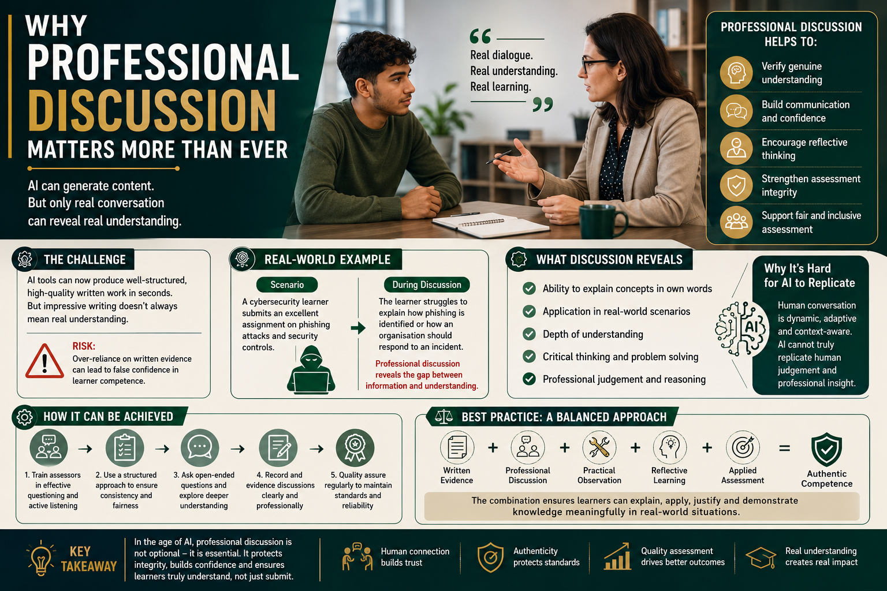

Artificial Intelligence can generate impressive written content within seconds, but only meaningful professional discussion can reveal genuine understanding, real-world application, and authentic learner competence.

Artificial Intelligence is rapidly changing how assessment evidence is created across education and vocational training environments.
Learners now have access to AI-powered tools such as ChatGPT, Microsoft Copilot, and Gemini that can generate written responses, improve grammar, structure assignments, and explain complex topics within seconds.
Professional discussion allows assessors to explore learner understanding through direct conversation rather than relying entirely on written evidence alone.
A learner may produce technically impressive written work while still struggling to explain concepts within realistic conversations or workplace scenarios.
Professional discussion quickly reveals the difference between information reproduction and genuine understanding.
When used properly, professional discussion also:
Professional discussion strengthens:
However, effective implementation requires assessor CPD, questioning skills, active listening, and strong standardisation processes.
Modern assessment systems increasingly require a balanced combination of written evidence, professional discussion, practical observation, reflective learning, and applied assessment methods.
Artificial Intelligence may continue transforming assessment rapidly, but meaningful conversation, human interaction, and professional judgement remain essential for verifying authentic learning and protecting educational integrity.